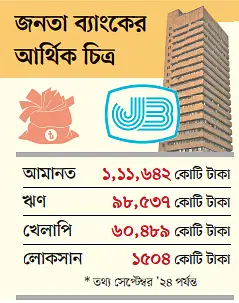

বিগত আওয়ামী লীগ সরকারের ঘনিষ্ঠ ব্যবসায়ীদের ঋণ দিয়ে বড় অঙ্কের লোকসানে পড়েছে রাষ্ট্রমালিকানাধীন জনতা ব্যাংক। ১০ শিল্প গ্রুপের কাছে ব্যাংকটির ৫৫ শতাংশ ঋণ কেন্দ্রীভূত হয়ে পড়েছে। প্রভাবশালী এসব গ্রাহক সময়মতো টাকা ফেরত না দেওয়ায় ব্যাংকটির ৬১ শতাংশ ঋণ খেলাপি হয়ে গেছে। এ কারণে চলতি বছরের প্রথম ৯ মাসে (জানুয়ারি-সেপ্টেম্বর) ব্যাংকটি ১ হাজার ৫০৪ কোটি টাকা লোকসান করেছে।
সম্প্রতি সরকারের কাছে দেওয়া একটি চিঠিতে জনতার চেয়ারম্যান ফজলুর রহমান বলেছেন, জনতা ব্যাংকের ইতিহাসে এমন নাজুক অবস্থা আর কখনো হয়নি। ব্যাংকটি এখন গভীর সংকটে নিমজ্জিত। পাশাপাশি বাংলাদেশ ব্যাংকের গভর্নর আহসান এইচ মনসুরের সঙ্গে সম্প্রতি এক সভায়ও নাজুক পরিস্থিতির কথা তুলে ধরা হয়।
চলতি ডিসেম্বরের প্রথম সপ্তাহে প্রায় ৬২ কোটি মার্কিন ডলার প্রবাসী আয় এসেছে। প্রতি ডলারের বিনিময়মূল্য ১২০ টাকা হিসাবে দেশি মুদ্রায় যার পরিমাণ প্রায় ৭ হাজার ৪৪০ কোটি টাকা।
বাংলাদেশ ব্যাংকের তথ্য অনুযায়ী, চলতি মাসের প্রথম সপ্তাহে সবচেয়ে বেশি প্রবাসী আয় এনেছে অগ্রণী ব্যাংক, ১০ কোটি ৯৭ লাখ ডলার। ইসলামী ব্যাংকের মাধ্যমে দ্বিতীয় সর্বোচ্চ ৯ কোটি ৯২ লাখ ডলারের প্রবাসী আয় এসেছে। এ ছাড়া কৃষি ব্যাংক ৪ কোটি ৫৮ লাখ, সোনালী ব্যাংক ৩ কোটি ৭৯ লাখ ও ন্যাশনাল ব্যাংক ৩ কোটি ৪০ লাখ ডলারের প্রবাসী আয় দেশে এনেছে।
বাংলাদেশ ব্যাংকের তথ্য অনুযায়ী, চলতি মাসের প্রথম ৭ দিনে রাষ্ট্রমালিকানাধীন ব্যাংকের মাধ্যমে ১৮ কোটি ৫২ লাখ ডলার, বিশেষায়িত ব্যাংকের মাধ্যমে ৪ কোটি ৫৮ লাখ ডলার, বেসরকারি ব্যাংকের মাধ্যমে ৩৮ কোটি ৩৪ লাখ ডলার ও বিদেশি ব্যাংকের মাধ্যমে দেশে এসেছে ২০ লাখ ডলারের প্রবাসী আয়।
দেশে ডলারের বিনিময়মূল্য বেশ কয়েক মাস ধরে স্থিতিশীল। সাধারণত মুদ্রার বিনিময় হার যেভাবে ওঠানামা করার কথা, সেভাবে করছে না। এই বাস্তবতায় মানুষের মধ্যে ডলার ধরে রাখার প্রবণতা তৈরি হতে পারে। প্রভাব পড়তে পারে বাজারে ডলারের সরবরাহে। সে জন্য ক্রলিং পেগের কথা বলেছে আন্তর্জাতিক মুদ্রা তহবিল (আইএমএফ)।
এ বিষয়ে আন্তর্জাতিক মুদ্রা তহবিল (আইএমএফ) শেষমেশ ঠিক কী পরামর্শ দেবে, সে বিষয়ে তারা এখনো সিদ্ধান্ত নেয়নি। গতকাল মঙ্গলবার বাংলাদেশ ব্যাংকের সঙ্গে আন্তর্জাতিক মুদ্রা তহবিলের মধ্যবর্তী পর্যালোচনা বৈঠক হয়েছে। সেই বৈঠকে বিভিন্ন বিষয়ের মধ্যে ডলারের বিনিময় হার নিয়েও আলোচনা হয়।